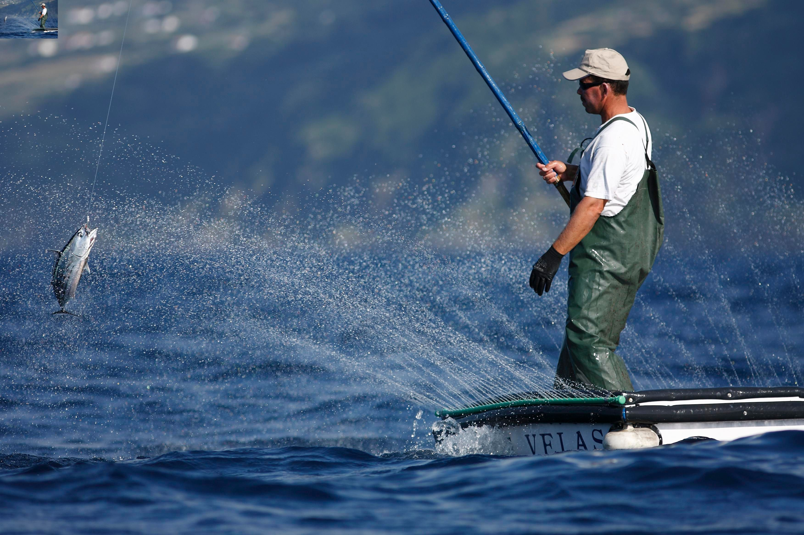

Navigating Sustainable Fisheries
Finding Balance in Ocean Conservation
In the intricate web of ocean conservation, one of the most burning challenges we face is achieving a delicate equilibrium between mortal conditions and the preservation of marine ecosystems. At the heart of this challenge lies the generality of sustainable fisheries operation. With billions of people counting on seafood as a primary source of protein and livelihood, the responsible operation of fisheries is consummate to securing marine biodiversity and icing the long- term health of our chasms.
Sustainable fisheries operation revolves around the idea of harvesting fish and other submarine organisms in a manner that maintains their populations at healthy situations while minimizing negative impacts on the marine terrain. This approach recognizes the interconnectedness of marine ecosystems and the significance of conserving the delicate balance of ocean life. Central to sustainable fisheries operation is the performance of wisdom- rested regulations and practices that promote responsible fishing. This includes setting catch limits rested on thorough scientific assessments of fish stocks, administering gear restrictions to reduce bycatch and niche destruction, establishing marine defended areas to guard critical homes, and promoting ecosystem- rested operation approaches that consider the broader ecological terrain. also, fostering collaboration among governments, fumbling communities, conservation associations, and scientists is essential for effective fisheries operation.
By working together, stakeholders can partake knowledge, coffers, and voguish practices, leading to further informed decision- making and better issues for both people and the earth. still, navigating the path to sustainable fisheries isn't without its challenges. Illegal, unreported, and limited( IUU) fishing, overexploitation of coffers, niche declination, and climate change pose significant pitfalls to the health of marine ecosystems. Addressing these challenges requires a multifaceted approach that combines robust enforcement mechanisms, community engagement, invention in fishing ways, and programs that promote long- term sustainability over short- term earnings. As individualities, we also play a vital part in supporting sustainable fisheries.
By making informed seafood choices, backing for responsible fishing
practices, supporting sustainable monoculture enterprise, and reducing
our own consumption of seafood, we can contribute to the collaborative
trouble to guard our chasms for unborn generations. In substance,
navigating sustainable fisheries is about chancing harmony between
mortal conditions and environmental stewardship. By embracing wisdom-
rested operation strategies, fostering collaboration, and empowering
individualities to make sustainable choices, we can work together to
insure that our chasms remain vibrant, productive, and flexible
ecosystems for times to come.